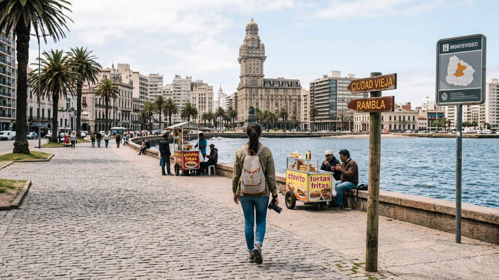

טיול באורוגוואי 2026 — המדריך המלא

אורוגוואי היא המדינה שאף אחד לא מתכנן ברצינות. היא נדחסת לשלושה ימים בין בואנוס איירס לברזיל, בדרך כלל בגלל שצריך לחדש ויזה או כי המעבורת יצאה. ואז קורה משהו: אתם מגיעים לכפר בין דיונות חול שאין אליו כביש ואין בו חשמל, יושבים על סלע מול מושבת כלבי ים, ומבינים שהערב הזה הוא אחד הדברים היפים שקרו לכם ביבשת.
בשביל מטיילים ישראלים אורוגוואי היא כמעט תמיד רגל קצרה בתוך מסלול גדול יותר — היא נוסעת יחד עם ארגנטינה וברזיל בשני כיווני הגל, ואין לה באמת חלון עונתי משלה. זה בדיוק מה שהופך אותה למדינה שקל להחמיץ. המדריך הזה נועד לעזור לכם להחליט כמה זמן לתת לה, ומתי בכלל שווה להגיע.
מתי כדאי לנסוע לאורוגוואי?
זו כנראה נקודת התכנון החשובה ביותר במדריך הזה, ורוב המטיילים מגלים אותה מאוחר מדי: אורוגוואי היא מדינת חוף עונתית באמת. לא במובן של "עדיף בקיץ", אלא במובן של סגור.
הקיץ (דצמבר–פברואר) הוא החלון האמיתי. החוף האטלנטי מתעורר לחיים: הוסטלים פותחים, מסעדות עובדות, האוטובוסים לקאבו פולוניו ולפונטה דל דיאבלו נוסעים בתדירות גבוהה, ויש עם מי לדבר. הטמפרטורות נעות סביב 25–30 מעלות, הים נעים והלילות ארוכים. המחיר: ינואר הוא חופשת הקיץ של כל ארגנטינה, המחירים קופצים וצריך להזמין לינה מראש.
מחוץ לחלון הזה, ובעיקר מאמצע אפריל עד נובמבר, הרבה מכפרי החוף פשוט נסגרים. קאבו פולוניו בחורף הוא כמה בתים דלוקים מול אוקיינוס אפור, פונטה דל אסטה הופכת לעיר רפאים של מגדלים ריקים, וחלק מהאוטובוסים מצטמצמים לנסיעה או שתיים ביום. יש בזה יופי מסוים ומחירים נמוכים, אבל אם באתם בשביל חופים — באתם בחודש הלא נכון.
מרץ הוא הסוד. הים עדיין חם מהקיץ, העסקים עוד פתוחים, הארגנטינאים חזרו הביתה והמחירים ירדו. אם יש לכם גמישות בתאריכים, זה החודש שכדאי לכוון אליו.
ויזה, כניסה ומעברי גבול
בעלי דרכון ישראלי לא צריכים ויזה מראש ומקבלים בדרך כלל 90 יום בכניסה. אין דרישות חיסון מיוחדות, והביורוקרטיה בגבול מהירה ואדיבה — במיוחד בהשוואה לחלק משכנותיה של אורוגוואי.
המעבורת מבואנוס איירס היא הדרך הקלאסית להגיע, וזו נסיעה שכדאי להבין לפני שמזמינים. שלוש חברות (Buquebus, Colonia Express ו-Seacat) חוצות את רִיוֹ דה לה פלאטה — נהר כל כך רחב שהוא נראה כמו ים פתוח. שני יעדים אפשריים:
- לקולוניה דל סקרמנטו — כשעה עד שעה ורבע בקטמרן מהיר. זו ההגעה היפה: אתם יורדים ישירות לתוך עיירה קולוניאלית מרוצפת אבן, ואפשר להמשיך משם באוטובוס למונטווידאו (כשעתיים וחצי). כרטיס משולב מעבורת+אוטובוס נמכר לרוב באותה הזמנה.
- ישירות למונטווידאו — כשעתיים וחצי עד שלוש שעות, יקר יותר, פחות יפה, וחוסך זמן רק אם אתם מדלגים על קולוניה (לא כדאי).
ביקורת הגבול של שתי המדינות מתבצעת יחד בטרמינל היציאה בבואנוס איירס, כך שההגעה לצד השני היא פשוט ירידה מהאונייה. הגיעו כשעה עד שעה וחצי לפני ההפלגה, וקנו כרטיסים מראש באתר — המחיר משתנה דרמטית לפי מועד ההזמנה ולפי השעה.
לברזיל ביבשה — המעבר המרכזי הוא בעיירה צ׳וּאִי (Chuy בצד האורוגוואי, Chuí בצד הברזילאי), ואין כמוה: הרחוב הראשי הוא הגבול. צד אחד של הכביש דובר ספרדית ומשלם בפזו, הצד השני דובר פורטוגזית ומשלם בריאל, ואנשים חוצים אותו בהליכה כדי לקנות בזול. שימו לב שתחנות ביקורת הגבול לא נמצאות ברחוב עצמו אלא כמה קילומטרים משני צדדיו — האוטובוסים עוצרים בהן, אבל אם אתם ברכב או במונית, זו האחריות שלכם לעצור ולהחתים כניסה ויציאה. בלי החותמת תיתקעו בהמשך.
מצפון, יש גם מעברים לארגנטינה ביבשה מעל הנהר — סלטו/קונקורדיה ופאיסנדו/קולון — שנוחים אם אתם מגיעים מאזור המפלים ולא מבואנוס איירס.
כמה עולה טיול באורוגוואי?
בואו נהיה כנים: אורוגוואי יקרה. היא אחת המדינות היקרות בדרום אמריקה, ומטיילים שמגיעים מבוליביה או מפרו חוטפים הלם מחירים אמיתי. אפילו ביחס לארגנטינה ולברזיל — ובעיקר בתקופות שבהן הפזו הארגנטינאי חלש — אורוגוואי מרגישה כמו קפיצת מדרגה. המטבע הוא פזו אורוגוואי (UYU).
| הוצאה | מחיר משוער |
|---|---|
| מיטה בחדר משותף בהוסטל | 18–30$ |
| חדר פרטי / קבניה בחוף | 50–90$ |
| ארוחה במסעדה מקומית | 10–18$ |
| אסאדו במסעדה טובה | 20–35$ |
| קפה + מדיה לונה | 3–5$ |
| מעבורת בואנוס איירס–קולוניה (כיוון אחד) | 45–90$ |
| אוטובוס מונטווידאו–פונטה דל דיאבלו | 12–20$ |
| ג׳יפ 4×4 לקאבו פולוניו (הלוך-חזור) | 10–15$ |
| השכרת רכב ליום (כולל ביטוח) | 45–70$ |
| לילה בהוסטל בפונטה דל אסטה בינואר | 40–70$ |
שורה תחתונה: מטייל תרמילאי סביר מוציא 45–60 דולר ביום כולל לינה, אוכל ותחבורה. עשרה ימים באורוגוואי עם המעבורת מבואנוס איירס יסתכמו בסביבות 600–800 דולר לאדם.
ומילה על פונטה דל אסטה בינואר: זה לא אותו תמחור ולא אותה מדינה. פונטה היא ריביירה של עשירים ארגנטינאים וברזילאים, ובשיא העונה מחירי הלינה, האוכל והמונית מגיעים לרמות אירופיות. אפשר בהחלט לראות אותה — פשוט תכננו לישון בעיירה שכנה כמו פיריאפוליס או לה ברה, ולהגיע לפונטה ליום.
איך מתניידים באורוגוואי?
אורוגוואי היא מדינה קטנה — בערך פי שמונה מישראל, אבל עם פחות מארבעה מיליון תושבים, שרובם חיים במונטווידאו. המרחקים קצרים והכבישים טובים, וזה משנה את כל היגיון התכנון: כמעט כל נסיעה במסלול הקלאסי היא בין שעה לחמש שעות, ואין נסיעות לילה מתישות של 18 שעות כמו בשאר היבשת.
אוטובוסים הם עמוד השדרה, והם טובים: נוחים, ממוזגים, דייקנים וזולים יחסית למחירי המדינה. חברות כמו COT, Rutas del Sol ו-Núñez מכסות את החוף. הכול יוצא מהתחנה המרכזית של מונטווידאו, Tres Cruces — תחנה מודרנית ונעימה עם קניון צמוד, שבה קונים כרטיסים בדלפק כמה שעות מראש (בעונת השיא כדאי יום מראש).
רכב שכור הוא כאן רעיון טוב באמת, וזה לא נכון ברוב דרום אמריקה. כביש 10 ו-Ruta 9 לאורך החוף הם מסלול נהיגה מענג, הכבישים בטוחים, התמרור ברור, ואין עומסי ענק. הרכב פותח את כל העיירות הקטנות שבין התחנות הגדולות — חופים ריקים, מגדלורים, מאפיות בכפר. לזוג או לשלישייה, עלות הרכב ליום מתחלקת ומתחרה יפה במחירי האוטובוס.
שתי הערות: לקאבו פולוניו אי אפשר להיכנס ברכב פרטי בכלל — משאירים אותו בחניון ליד הכביש הראשי ועולים על ג׳יפ 4×4 שחוצה את הדיונות. ולמונטווידאו אין שום סיבה להיכנס ברכב; העיר נוחה להליכה ולאוטובוס, וחניה היא כאב ראש מיותר.
המסלול המומלץ — 9 ימים לאורך החוף
המסלול בנוי מערב למזרח, כלומר מבואנוס איירס לכיוון ברזיל. בכיוון ההפוך הוא עובד בדיוק אותו דבר, פשוט הפוך:
- ימים 1–2 · קולוניה דל סקרמנטו — הגעה במעבורת ישר לתוך הבארִיוֹ היסטוריקו, רובע קולוניאלי פורטוגזי-ספרדי מאתרי מורשת עולמית של אונסק"ו. רחובות אבן, בוגנוויליות, מכוניות עתיקות שמשמשות כעציצים ומגדלור שמשקיף על הנהר. יום אחד מספיק לראות, יומיים מספיקים כדי ליהנות. שקיעה על החומה היא חובה.
- ימים 3–4 · מונטווידאו — הבירה הכי לא-בירתית ביבשת: רגועה, מוזנחת ביופי, מלאה אמנות רחוב ובלי שום יומרה. הרמבלה, טיילת החוף שנמתחת לאורך יותר מ-20 קילומטר, היא הלב של העיר — בערב כולם שם, עם תרמוס מתחת לזרוע. אל תפספסו את מרקדו דל פוארטו, שוק מקורה שהפך למקדש של גרילים.
- יום 5 · פיריאפוליס — עיירת נופש ישנה ומקסימה עם טיילת, גבעה ומגדלור. תחנת ביניים קצרה ונעימה בדרך מזרחה.
- יום 6 · פונטה דל אסטה — מגדלים, יאכטות ומחירים. באים בשביל La Mano, פסל היד הענקית שבוקעת מהחול בחוף בראבה, בשביל הנוף מקאסה פופולו ובשביל האנרגיה. יום אחד מספיק לחלוטין.
- ימים 7–8 · קאבו פולוניו — הלב של הטיול. כפר בתוך שמורת דיונות שאין אליו כביש: משאירים את הרכב ועולים על ג׳יפ שמטפס על החול. אין רשת חשמל — התאורה היא סולארית, גנרטורים ונרות, ובלילה השמיים מתפוצצים מכוכבים בצורה שקשה למצוא בקרבת עיר. מתחת למגדלור יושבת מושבת כלבי ים גדולה, ואפשר לשמוע אותה מהמיטה. תישארו לילה אחד לפחות — מי שבא ליום מפספס בדיוק את מה שמיוחד כאן.
- יום 9 · פונטה דל דיאבלו — כפר דייגים בוהמייני עם בתי עץ, מוזיקה בערב, גלים חזקים וקצב שמאט אתכם תוך שעה. בסיס טוב גם לפארק הלאומי סנטה תרסה, שבו יער אקליפטוס, מבצר ישן וחופים ריקים.
יש עוד כמה ימים? הוסיפו את לה פדררה, כפר החוף הצעיר והמסיבתי של אורוגוואי, שממוקם נוח בין קאבו פולוניו לפונטה דל דיאבלו. אם אתם ממשיכים לברזיל, פונטה דל דיאבלו נמצאת שעה בלבד מצ׳ואי והיא נקודת יציאה מושלמת. ומי שרוצה לראות אורוגוואי אחרת לגמרי — הפנים הכפרי — יכול להוסיף אסטנסיה (חוות בקר) לילה או שניים, או את העיירה התרמית סלטו בצפון.
מה חובה לראות באורוגוואי?
חמש החוויות שמצדיקות את הנסיעה:
- קאבו פולוניו — כפר בלי כביש ובלי חשמל, בין דיונות נודדות, עם מגדלור ומושבת כלבי ים. הדבר הכי בלתי-רגיל באורוגוואי, ואחד המקומות הכי מיוחדים בכל החוף האטלנטי של היבשת.
- הרובע ההיסטורי של קולוניה — עיירה קולוניאלית שלמה מהמאה ה-17 שנשמרה כמעט בשלמותה, קטנה מספיק כדי לחצות ברגל בעשרים דקות ויפה מספיק כדי להישאר בה יום.
- הרמבלה של מונטווידאו בשקיעה — לא אתר, אלא טקס. עשרים קילומטר של טיילת שבה כל העיר יושבת על המעקה עם מאטה ביד ומסתכלת על השמש נכנסת לנהר.
- מרקדו דל פוארטו — שוק הבשרים המקורה של מונטווידאו, שבו עשרות גרילי פרילה בוערים במקביל. שבו על הבר מול הגריל, בקשו אסאדו ותנו למלצר להמליץ.
- פונטה דל דיאבלו וסנטה תרסה — הצירוף של כפר דייגים בוהמייני ופארק לאומי ענק עם חופים ריקים, שהוא הפינה הכי נעימה לעצור בה כמה ימים.
ומילה על מאטה. במקומות אחרים ביבשת שותים מאטה; באורוגוואי חיים ממנה. אורוגוואים באמת מסתובבים כל היום עם הכוס ביד ותרמוס מתחת לזרוע — בעבודה, על האופנוע, בחוף, בהלוויה. תרמוס עם ידית עשוי במיוחד לזווית הזאת הוא מוצר צריכה סטנדרטי. אם מציעים לכם — קחו, אל תגידו תודה כשמגישים (זה סימן שסיימתם), אל תזיזו את הקשית, ותחזירו את הכוס למי שנתן. זה הכרטיס החברתי הכי טוב שיהיה לכם במדינה הזאת.
בטיחות באורוגוואי — מה באמת צריך לדעת
אורוגוואי היא מהמדינות הבטוחות והיציבות ביבשת, וזה לא פרט שולי — זה חלק ממה שאנשים אוהבים בה. דמוקרטיה ותיקה, מוסדות מתפקדים, אין מתחים פוליטיים אלימים ואין את תחושת הדריכות שמלווה מטיילים בחלק משכנותיה. אפשר לנשום.
מה שכן שווה הקפדה:
- מונטווידאו בערב — הסיודד ויאחה (העיר העתיקה) יפהפייה ביום ומתרוקנת בלילה. אחרי החשכה עדיף להיות בקבוצה, להישאר ברחובות הראשיים או לקחת מונית/אובר לחזרה. אזור התחנה המרכזית וכמה שכונות בפריפריה של העיר פחות מומלצים למטיילים בכלל.
- גניבות כיס — הפשיעה הרלוונטית למטיילים היא כמעט תמיד רכושית ולא אלימה. לא להשאיר טלפון על שולחן בבית קפה ולא להציג מצלמה יקרה ברחוב, וזהו.
- הים — זו הסכנה האמיתית באורוגוואי, ואנשים מזלזלים בה. החוף האטלנטי פתוח לאוקיינוס, הגלים חזקים ויש זרמי ריפ. מחוץ לשיא הקיץ אין מצילים כמעט בשום מקום. אל תיכנסו לבד לחוף ריק, ואם נסחפתם — שחו במקביל לחוף ולא נגד הזרם.
- קאבו פולוניו — אין רשת חשמל, ולפעמים גם אין קליטה סלולרית יציבה. הגיעו עם סוללה טעונה ופאוור-בנק, עם מזומן (כספומטים אין, וחלק מהעסקים לא מקבלים כרטיס), ועם פנס. ההליכה בין הבתים בלילה היא על חול, בחושך מוחלט, וזה חלק מהיופי — אבל רק עם פנס.
- קנאביס — אורוגוואי הייתה המדינה הראשונה בעולם שהסדירה את השוק במלואו, אבל הרכישה החוקית בבתי מרקחת שמורה לאזרחים ולתושבים רשומים בלבד. תיירים לא יכולים לקנות כחוק, וכדאי להכיר את ההבדל.
שאלות נפוצות
כמה ימים צריך לאורוגוואי?
שלושה ימים מספיקים לקולוניה ולמונטווידאו, וזה מה שרוב המטיילים עושים. אבל החוף האטלנטי הוא הסיבה האמיתית להגיע, ובשבילו צריך לפחות שבוע. תשעה עד עשרה ימים הם המספר שמאפשר לראות את קולוניה, מונטווידאו, קאבו פולוניו ופונטה דל דיאבלו בלי למהר, ובלי להיתקע ביום נסיעה מיותר.
איך מגיעים מבואנוס איירס לאורוגוואי?
במעבורת. הקטמרן המהיר לקולוניה דל סקרמנטו לוקח כשעה עד שעה ורבע, וההגעה הישירה למונטווידאו לוקחת כשעתיים וחצי עד שלוש. שלוש חברות מפעילות את הקו — Buquebus, Colonia Express ו-Seacat — ומחירי הכרטיס משתנים מאוד לפי מועד ההזמנה, אז כדאי לקנות מראש באינטרנט. ביקורת הגבול של שתי המדינות נעשית יחד בטרמינל בבואנוס איירס, כך שהירידה בצד השני מהירה.
אורוגוואי יקרה?
כן, וזו ההפתעה הכי גדולה שמחכה למטיילים שמגיעים מפרו או מבוליביה. תקציב תרמילאי סביר הוא 45 עד 60 דולר ביום — כמעט כפול מגואטמלה ומורגש גם ביחס לארגנטינה ולברזיל. הדרכים העיקריות לחסוך הן לישון בהוסטלים במקום בקבניות, לקנות בסופר ולבשל, לנסוע באוטובוסים ציבוריים ולהימנע מלינה בפונטה דל אסטה בשיא ינואר.
האם באמת אין חשמל בקאבו פולוניו?
אין רשת חשמל ארצית. הכפר יושב בתוך שמורת טבע ומתופעל על פאנלים סולאריים, טורבינות רוח קטנות וגנרטורים פרטיים שנדלקים לשעות מסוימות בערב. חלק מההוסטלים מציעים נקודת טעינה מוגבלת, אבל אל תסמכו על זה: הביאו פאוור-בנק, מזומן ופנס. גם קליטה סלולרית היא עניין חלקי, וזה, בכנות, חצי מהסיבה להגיע.
האם ישראלים צריכים ויזה לאורוגוואי?
לא. בעלי דרכון ישראלי נכנסים לאורוגוואי ללא ויזה ומקבלים בדרך כלל 90 יום בכניסה. הדרכון צריך להיות בתוקף, ומומלץ שיישאר תקף לפחות שישה חודשים. אין דרישת חיסונים מיוחדת, וגם הכניסה במעבורת מבואנוס איירס וביבשה מברזיל מתבצעת באותו נוהל.
כמה עולה טיול באורוגוואי ליום?
מטייל תרמילאי מוציא בערך 45 עד 60 דולר ביום: מיטה בהוסטל 18 עד 30 דולר, ארוחה במסעדה מקומית 10 עד 18 דולר ונסיעות אוטובוס קצרות 5 עד 15 דולר. אורוגוואי יקרה משמעותית משכנותיה ומרוב דרום אמריקה. פונטה דל אסטה בינואר היא עולם מחירים אחר לגמרי, ושם המחירים יכולים להכפיל את עצמם.
מתי העונה הטובה ביותר לטייל באורוגוואי?
דצמבר עד פברואר הם הקיץ ובהם החוף חי: הוסטלים פתוחים, מסעדות עובדות, אוטובוסים נוסעים בתדירות גבוהה ויש מטיילים. מחוץ לחלון הזה חלק גדול מכפרי החוף פשוט נסגר, וקאבו פולוניו או פונטה דל דיאבלו יכולים להיראות כמו עיירת רפאים יפה. מרץ הוא פשרה טובה: הים עדיין חמים, המחירים יורדים והצפיפות נעלמת.
האם אורוגוואי בטוחה למטיילים?
אורוגוואי נחשבת לאחת המדינות הבטוחות והיציבות בדרום אמריקה, וזה חלק אמיתי מהקסם שלה. הכללים הם הכללים העירוניים הרגילים: לא להסתובב לבד בסיודד ויאחה שבמונטווידאו אחרי רדת החשכה, לא להציג טלפון יקר ברחוב ולהיזהר בתחנה המרכזית. בחוף האטלנטי הסכנה האמיתית היא הים עצמו — יש זרמים חזקים וכמעט אין מצילים מחוץ לשיא הקיץ.
לאורוגוואי לא באים בשביל הסופרלטיבים — אין בה הר גבוה במיוחד או אתר עתיק במיוחד. באים בשביל הקצב. תנו לה שבוע, ולא שלושה ימים.